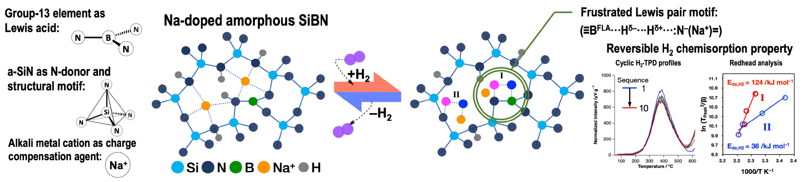

Selected Publication
Novel Lewis Acid‐Base Interactions in Polymer‐Derived Sodium‐Doped Amorphous Si−B−N Ceramic:
Towards Main‐Group‐Mediated Hydrogen Activation
Sodium-doped amorphous Si–B–N ceramics enable frustrated Lewis pair (FLP) formation and reversible H₂ chemisorption through in situ structural transformation.

Publications
Ambiguities in oxynitride chemistry: A perspective on urea-mediated synthesis
2026 · DOI
An in situ growth route towards anti-perovskite Ni3InN nanoparticles embedded within amorphous silicon nitride
2024 · DOI
Abstract
Herein, we report a new approach toward the design of anti-perovskite nitrides at the nanoscale.
Downshift of the Ni d band center over Ni nanoparticles in situ confined within an amorphous silicon nitride matrix
2024 · DOI
Abstract
More covalent Ni–N bonds at Ni/amorphous Si 3 N 4 heterointerfaces resulted in downshifting the Ni d band centerand facilitating H 2 desorption.
Novel Lewis Acid‐Base Interactions in Polymer‐Derived Sodium‐Doped Amorphous Si−B−N Ceramic: Towards Main‐Group‐Mediated Hydrogen Activation
2024 · DOI
Abstract
Interest is growing in transition metal‐free compounds for small molecule activation and catalysis. We discuss the opportunities arising from synthesizing sodium‐doped amorphous silicon‐boron‐nitride (Na‐doped a‐SiBN). Na + cations and 3‐fold coordinated B III moieties were incorporated into an amorphous silicon nitride network via chemical modification of a polysilazane followed by pyrolysis in ammonia (NH 3 ) at 1000 °C. Emphasis is placed on the mechanisms of hydrogen (H 2 ) activation within Na‐doped a‐SiBN structure. This material design approach allows the homogeneous distribution of Na + and B III moieties surrounded by SiN 4 units contributing to the transformation of the B III moieties into 4‐fold coordinated geometry upon encountering H 2 , potentially serving as frustrated Lewis acid (FLA) sites. Exposure to H 2 induced formation of frustrated Lewis base (FLB) N − = sites with Na + as a charge‐compensating cation, resulting in the in situ formation of a frustrated Lewis pair (FLP) motif (≡B FLA ⋅⋅⋅H δ− ⋅⋅⋅H δ+ ⋅⋅⋅:N − (Na + )=). Reversible H 2 adsorption‐desorption behavior with high activation energy for H 2 desorption (124 kJ mol −1 ) suggested the H 2 chemisorption on Na‐doped a‐SiBN. These findings highlight a future landscape full of possibilities within our reach, where we anticipate main‐group‐mediated small molecule activation will have an important impact on the design of more efficient catalytic processes and the discovery of new catalytic transformations.
From polysilazanes to highly micro-/mesoporous Si3N4 containing in situ immobilized Co or Ni-based nanoparticles
2023 · DOI
Mechanistic Investigation of the Formation of Nickel Nanocrystallites Embedded in Amorphous Silicon Nitride Nanocomposites
2022 · DOI
Abstract
Herein, we report the mechanistic investigation of the formation of nickel (Ni) nanocrystallites during the formation of amorphous silicon nitride at a temperature as low as 400 °C, using perhydropolysilazane (PHPS) as a preformed precursor and further coordinated by nickel chloride (NiCl2); thus, forming the non-noble transition metal (TM) as a potential catalyst and the support in an one-step process. It was demonstrated that NiCl2 catalyzed dehydrocoupling reactions between Si-H and N-H bonds in PHPS to afford ternary silylamino groups, which resulted in the formation of a nanocomposite precursor via complex formation: Ni(II) cation of NiCl2 coordinated the ternary silylamino ligands formed in situ. By monitoring intrinsic chemical reactions during the precursor pyrolysis under inert gas atmosphere, it was revealed that the Ni-N bond formed by a nucleophilic attack of the N atom on the Ni(II) cation center, followed by Ni nucleation below 300 °C, which was promoted by the decomposition of Ni nitride species. The latter was facilitated under the hydrogen-containing atmosphere generated by the NiCl2-catalyzed dehydrocoupling reaction. The increase of the temperature to 400 °C led to the formation of a covalently-bonded amorphous Si3N4 matrix surrounding Ni nanocrystallites.
Low temperature in-situ formation of cobalt in silicon nitride toward functional nitride nanocomposites
2021 · DOI
Abstract
A proposed reaction scheme for in situ controlled low-temperature formation of metallic-Co at the early stage of pyrolysis of perhydropolysilazane (PHPS) coordinated with CoCI 2 .
Novel hydrogen chemisorption properties of amorphous ceramic compounds consisting of p-block elements: exploring Lewis acid-base Al–N pair site formed in-situ within polymer-derived silicon-aluminum-nitrogen-based system
2021 · DOI
Abstract
This paper reports the relationship between the H 2 chemisorption properties and reversible structural reorientation of the possible active sites around Al formed in situ within polymer-derived ceramics (PDCs) based on an amorphous Si–Al–N system.
Highly active, robust and reusable micro-/mesoporous TiN/Si3N4 nanocomposite-based catalysts for clean energy: Understanding the key role of TiN nanoclusters and amorphous Si3N4 matrix in the performance of the catalyst system
2020 · DOI
Hydrogen transport property of polymer-derived cobalt cation-doped amorphous silica
2020 · DOI
Abstract
The effect of the local structure of Co-doped amorphous silica on the hydrogen transport property was studied with the aim to improve the high-temperature hydrogen-permselectivity of microporous amorphous silica-based membranes.
Reversible Redox Property of Co(III) in Amorphous Co-doped SiO2/γ-Al2O3 Layered Composites
2020 · DOI
Abstract
This paper reports on a unique reversible reducing and oxidizing (redox) property of Co(III) in Co-doped amorphous SiO2/γ-Al2O3 composites. The Fenton reaction during the H2O2-catalyzed sol–gel synthesis utilized in this study lead to the partial formation of Co(III) in addition to Co(II) within the composites. High-resolution transmission electron microscopy (HRTEM) and high-angle annular dark-field scanning transmission electron microscopy (HAADF-STEM) analyses for the composite powder sample with a composition of Al:Si:Co = 85:10:5 showed the amorphous state of the Co-doped SiO2 that modified γ-Al2O3 nanocrystalline surfaces. In situ X-ray absorption fine structure (XAFS) spectroscopic analysis suggested reversible redox reactions of Co species in the composite powder sample during heat-treatment under H2 at 500 °C followed by subsequent cooling to RT under Ar. Further analyses by in situ IR spectroscopy combined with cyclic temperature programmed reduction/desorption (TPR/TPD) measurements and X-ray photoelectron spectroscopic (XPS) analysis revealed that the alternating Co(III)/(II) redox reactions were associated with OH formation (hydrogenation)-deformation (dehydrogenation) of the amorphous aluminosilicate matrix formed in situ at the SiO2/γ-Al2O3 hetero interface, and the redox reactions were governed by the H2 partial pressure at 250–500 °C. As a result, a supported mesoporous γ-Al2O3/Co-doped amorphous SiO2/mesoporous γ-Al2O3 three-layered composite membrane exhibited an H2-triggered chemical valve property: mesopores under H2 flow (open) and micropores under He flow (closure) at 300–500 °C.